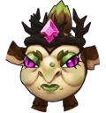

Pico da Desolação
Chefe: Harpia Matriarca
No topo desta montanha rochosa e sinistra vivem demônios emplumados.
Níveis
1
Poder 6.500
Garra Cruel, Casca de Ovo de Zircônia, Ventania Boreal
2
Poder 9.000
Garra Cruel, Casca de Ovo de Zircônia, Ventania Boreal
3
Poder 10.000
Garra Cruel, Casca de Ovo de Zircônia, Ventania Boreal
4
Poder 13.000
Garra Cruel, Casca de Ovo de Zircônia, Ventania Boreal
5
Poder 10.000 · Chefe
Garra Cruel, Casca de Ovo de Zircônia, Ventania Boreal
6
Poder 12.000 · Chefe
Garra Cruel, Casca de Ovo de Zircônia, Ventania Boreal
7
Poder 13.000 · Chefe
Garra Cruel, Casca de Ovo de Zircônia, Ventania Boreal
8
Poder 16.000 · Chefe
Garra Cruel, Casca de Ovo de Zircônia, Ventania Boreal